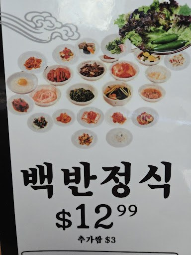
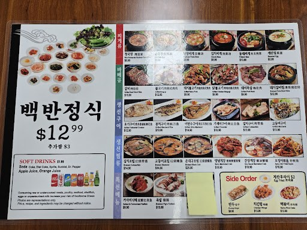
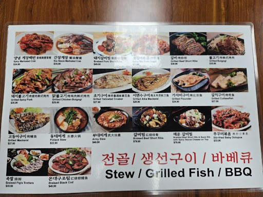

THE MENU.
Explore the dishes photographed on K-SSAMbap's menu boards. Some names and prices await confirmation; please ask the restaurant for current details.
Menu transcribed from customer-supplied photographs. Photographed prices are historical and should be confirmed with K-SSAMbap before ordering. Dishes and availability may change. Illustrative category photos do not necessarily show the specific dish listed.
SEE WHAT'S COOKINGTHE FLAVORS
THE FLAVORS
IN MOTION.
From sizzling plates to a spread of sides, explore Korean favorites at K-SSAMbap.
ORIGINAL MENU BOARDS.
See the original sources behind the transcription.


